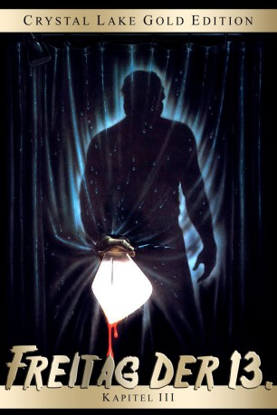

#4084 Freitag, der 13. - Teil 03 - Und wieder ist Freitag der 13.
Alternativ: Friday the 13th Part III
 
 IMDB-Wertung: 5.7 / 10
IMDB-Wertung: 5.7 / 10  Metascore: 0
Metascore: 0 
Ginny Field konnte Jason Voorhees überrumpeln und töten. Crystal Lake scheint also wieder sicher. So wie das Ehepaar Harold und seine Frau Edna , das in der Nähe des Sees lebt. Doch Jason ist noch lange nicht tot und ermordet das Ehepaar auf brutale Weise. Ebenso ahnungslos sind die Jugendlichen Christina Higgins, Andy, Vera , Debbie und Shelly, die am Crystal Lake ein Wochenende verbringen möchten. Mit dabei sind die Hippies Chuck und Chili. Dort angekommen treffen sie auf Chris' Freund Rick Es dauert nicht lange, bis Jason der Urlaubstruppe auflauert und einen nach dem anderen auf brutale Art und Weise ins Nirvana schickt.
Jahr: 1982
Dauer: 95 Minuten
FSK: 16
Land: USA Studio: Paramount PicturesTonspuren: DD2.0 - ,
Untertitel: Deutsch,
Auflösung: 1080p (1920x1080) Größe: 7690 MB
Genre: Horror, Thriller
Regisseur:  Steve Miner
Steve Miner
Drehbuch: Michael Tolkin
Soundtrack:
Darsteller:
- David Katims als Chuck
- Dana Kimmell als Chris
- Larry Zerner als Shelly
 Betsy Palmer als Mrs. Pamela Voorhees , archive footage
Betsy Palmer als Mrs. Pamela Voorhees , archive footage Amy Steel als Ginny Field , archive footage
Amy Steel als Ginny Field , archive footage- John Furey als Paul Holt , archive footage
 Steve Dash als Jason , archive footage
Steve Dash als Jason , archive footage- Terry Ballard als State Trooper #2
- Richard Brooker als Jason
- Gloria Charles als Fox
- Anne Gaybis als The Cashier
- Rachel Howard als Chili
- Paul Kratka als Rick
- Cheri Maugans als Edna
- Terence McCorry als State Trooper #3
- Charlie Messenger als State Trooper #1
- Kevin O'Brien als Loco
- Catherine Parks als Vera
- Jeffrey Rogers als Andy
- Nick Savage als Ali
- Tracie Savage als Debbie
- Gianni Standaart als Newswoman
- Steve Susskind als Harold
- Perla Walter als Mrs. Sanchez
- David Wiley als Abel
- Steve Miner als Newscaster , uncredited
- Marilyn Poucher als Mrs. Voorhees corpse , uncredited
Datei: X:\FSK18-Collections\Freitag, der 13\Freitag, der 13. - Teil 03 - Und wieder ist Freitag der 13. (1982, FSK16, 1920x1080).mkv seit 19.07.2016
Festplatte: FSK18
 Es gibt insgesamt 15 Filme in der Gruppe 'FSK18-Collections\Freitag, der 13'
Es gibt insgesamt 15 Filme in der Gruppe 'FSK18-Collections\Freitag, der 13'